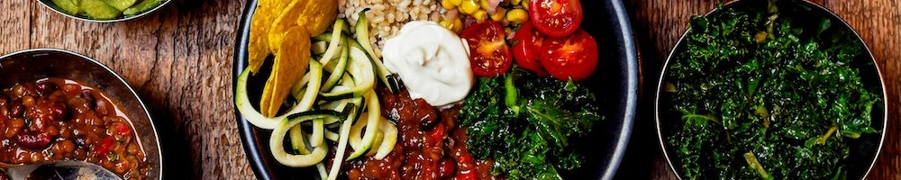

The Culture of Biryani Biryani isn't just a dish in Indian households. It's a meal that binds people together, creating wholesome experiences. Whether it's a quiet weekend or a grand celebration like Eid or Ramadan, Biryani is a must-have. Each family has it's own version of preparing the meal that has a story behind it. Some people might prefer the rich and spicy taste of Hyderabadi biryani while others may prefer the gentle, aromatic layers of Lucknowi biryani. Kolkata biryani adds its own royal charm, while Sindhi biryani brings bold, deep flavours. Even a delicious veg biryani brings joy to festive spreads. During Navratri, the navratna biryani brings together a mix of textures and colours, all bound by tradition. At the heart of all this flavour lies one secret: the rice. Not just any rice, but the finest basmati. Long, aromatic grains that stay separate and soak up every spice. That is what makes each bite unforgettable. Kohinoor Basmati Rice is trusted to carry the weight of such dishes. After all, the rice holds the soul of the biryani. From dum biryani to family dinners, the story always begins the same way, with good rice and a pot full of love. The Origins of Biryani: A Historical Perspective You'd be surprised to know that the story of biryani did not begin in India. It started in Persia, where rice and meat were cooked together in one pot. That early biryani recipe travelled across lands with traders, soldiers, and kings. It crossed deserts and borders before finding a home in Indian kitchens. When the Mughals came, they brought more than rule. They brought food that was rich, full of flavour, and made to be shared. Under their influence, the biryani turned royal. It was slow-cooked, layered with spice, and made with care. The dum biryani, cooked gently on low heat, is one of their lasting gifts. As time passed, the recipe of biryani tweaked with every region it travelled. It was shaped by strong flavours and was comparatively spicier in Hyderabad. Whereas it was mild and fragrant in Lucknow. The Nawabs created the Lucknowi biryani with its mild and balanced taste. Every ruler added their own charm that evolved the biryani recipe overtime. The rice became finer, the meat more tender, and the spices richer. Yet one thing stayed the same. Biryani remained a dish that brought comfort and joy. A plate that told a story. Iconic Types of Biryani Across India You will find a new flavour or a different way of Biryani preparation in every part of India. Here are a few classic versions of biryani that continue to beat hunger but don't fill heart's content. Hyderabadi Biryani Spicy, layered, and full of bold flavours, Hyderabadi biryani is often made with marinated meat cooked raw with rice in the dum style.

Some quick example text to build on the card title and make up the bulk of the card’s content.
Go somewhere
Some quick example text to build on the card title and make up the bulk of the card’s content.
Go somewhere
Some quick example text to build on the card title and make up the bulk of the card’s content.
Go somewhereIndian cuisine consists of a variety of regional and traditional cuisines native to the Indian subcontinent. Given the diversity in soil, climate, culture, ethnic groups, and occupations, these cuisines vary substantially and use locally available ingredients. Indian food is also heavily influenced by religion, in particular Hinduism and Sikhism, cultural choices and traditions.Historical events such as invasions, trade relations, and colonialism have played a role in introducing certain foods to India. The Columbian discovery of the New World brought a number of new vegetables and fruits. A number of these such as potatoes, tomatoes, chillies, peanuts, and guava have become staples in many regions of India. Indian cuisine has shaped the history of international relations; the spice trade between India and Europe was the primary catalyst for Europe's Age of Discovery.Spices were bought from India and traded around Europe and Asia. Indian cuisine has influenced other cuisines across the world, especially those from Europe (Britain in particular), the Middle East, Southern Africa, East Africa, Southeast Asia, North America, Mauritius, Fiji, Oceania, and the Caribbean. World Wildlife Fund Living Planet Report released on 10 October 2024 emphasised India food consumption pattern as the most sustainable among the big economies (G20 countries).